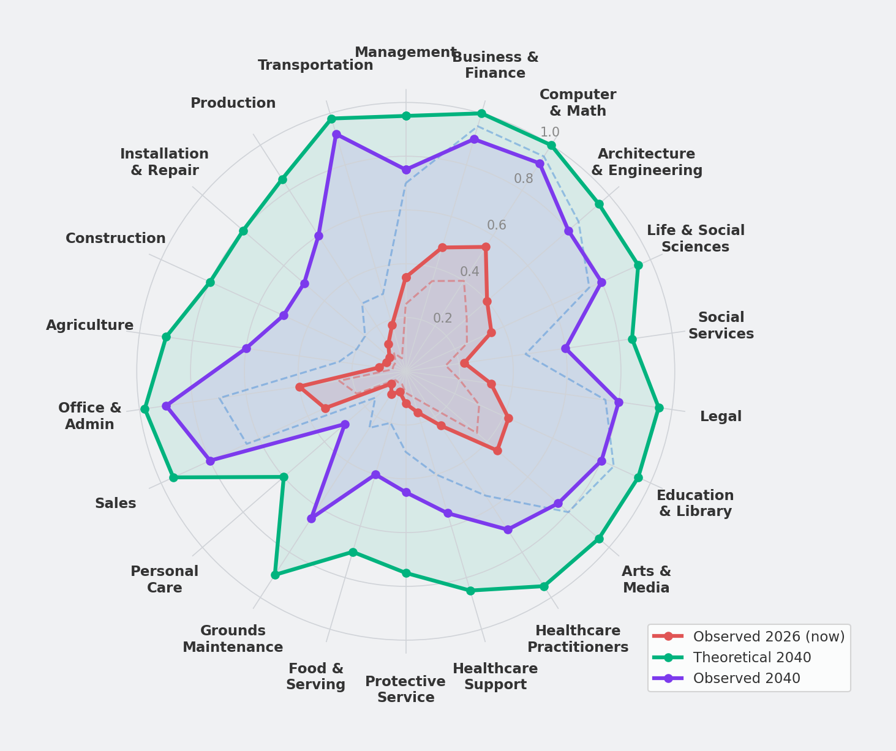
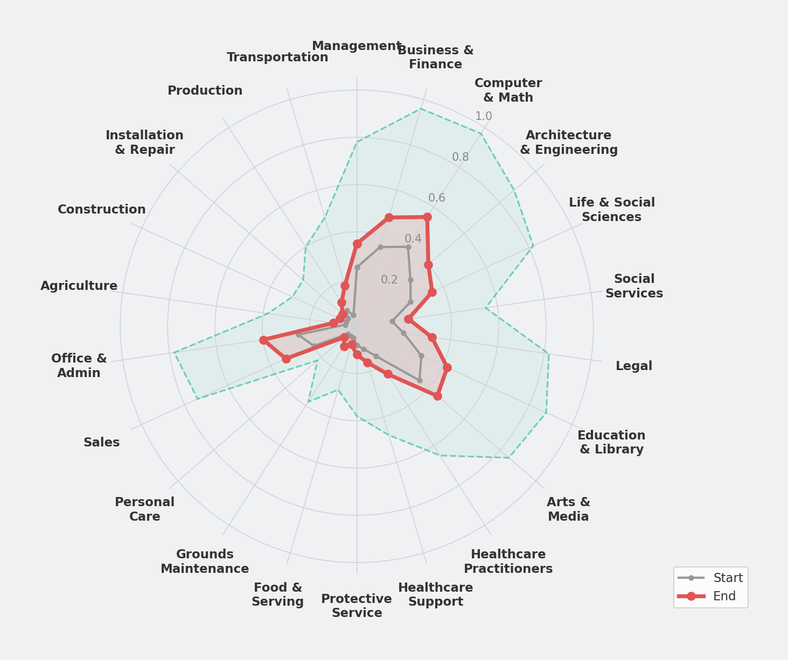
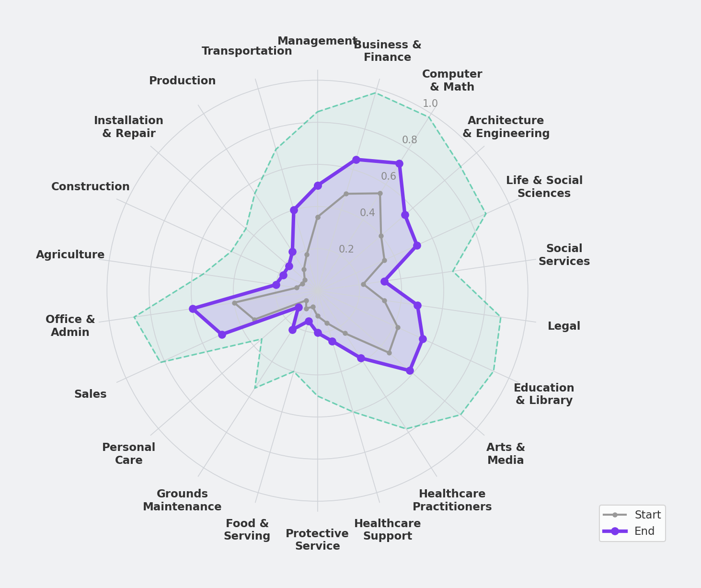
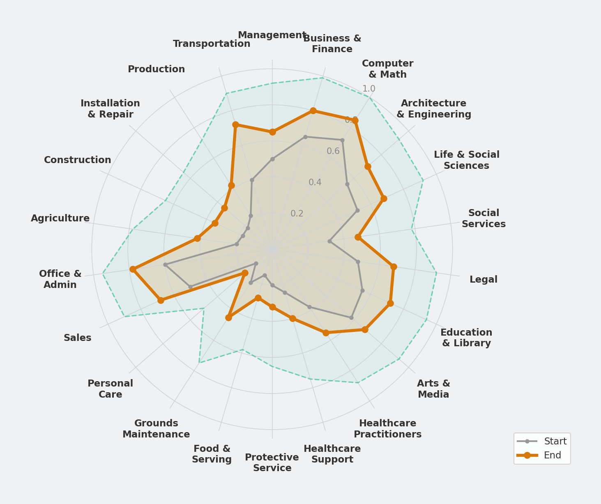
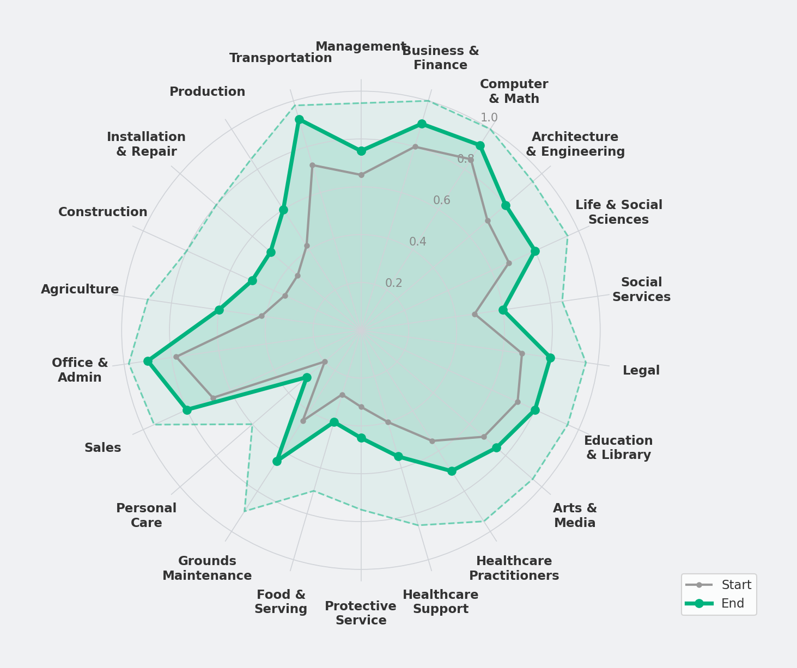
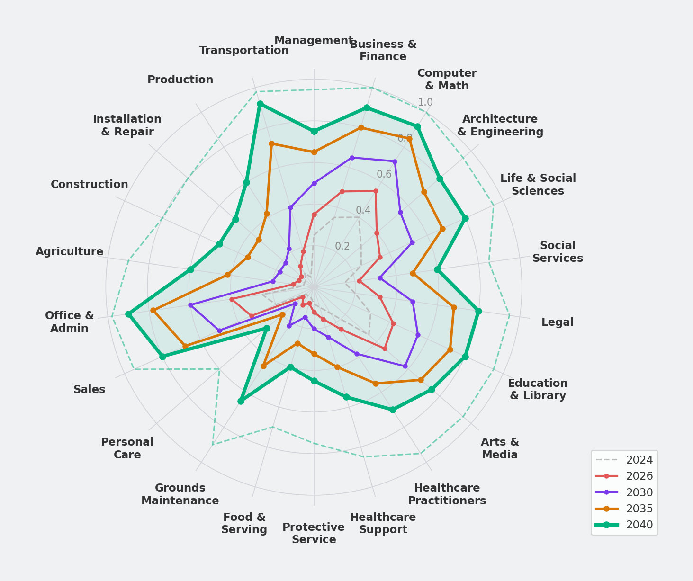

The gap between what AI can do and what it's actually doing is the defining story of the next 15 years. Here's how it closes - occupation by occupation, half-decade by half-decade.
There's a radar chart that maps AI coverage across 22 occupational categories - everything from computer science to construction, legal to landscaping. It plots two lines: theoretical capability (what AI could handle if we let it) and observed adoption (what's actually deployed in the real world).
In 2024, those two lines tell a dramatic story. The theoretical coverage is already massive in knowledge work - computer & math at 0.95, business & finance at 0.95, architecture & engineering at 0.85. AI could already do most of this work.
But observed adoption? It's a tiny cluster huddled in the center of the chart. Computer & math at 0.40. Business & finance at 0.35. Legal at 0.20. And anything requiring a physical body - construction, agriculture, installation & repair - is sitting at essentially zero.
That gap between “can” and “does” is the adoption curve. And it's about to go exponential.
I projected this forward by modeling the convergence of three forces: AI (software intelligence), robotics (physical execution), and nanotechnology (molecular-scale precision). Each one compounds the others. Here's the map, era by era.

We're two years into the post-ChatGPT era and the knowledge-work categories have already moved significantly. The 2026 observed line sits noticeably outside the 2024 cluster - not dramatically, but enough to see the direction.
The net effect: observed coverage in knowledge-work categories roughly doubles. The theoretical ceiling barely moves because AI could already handle most of this - we're just finally letting it.
But here's the thing: the physical-world categories barely moved. Construction is still at 0.08. Agriculture at 0.10. Food & serving at 0.08. The bottom half of the radar chart is still nearly flat. That's about to change.

This is the inflection point for white-collar work. The paradigm shifts from “AI as tool” to “AI as autonomous agent.” Instead of generating a draft for you to edit, AI executes entire workflows end-to-end - and asks you to approve the output.
The theoretical-to-observed gap in management shrinks from 0.45 to 0.20. Five years of adoption friction - regulatory approval, enterprise integration, trust, inertia - has eroded.

Everything before this era was software eating the knowledge economy. Now hardware catches up. The convergence of AI-level intelligence with physical dexterity and manipulation transforms the bottom half of the radar chart - the categories that barely moved from 2024 to 2028.
This is the era where the radar chart stops looking like a crown that only covers knowledge work and starts filling in its entire circumference. The physical world joins the AI economy.

The three forces stop being separate industries and become a unified technology stack. AI provides the intelligence, robotics provides the body, and nanotechnology provides precision at scales humans can't perceive. They compound each other - AI designs the nano-materials that make better robots that collect better data that trains better AI.
By 2036, the average theoretical coverage across all 22 categories hits 0.90. There are almost no occupations where AI lacks the theoretical capability to handle most tasks.
The question flips. It's no longer “what can AI do?” - it's “where do humans choose to stay?” Technology stops being the bottleneck. The theoretical ceiling is near 1.0 almost everywhere. The remaining gaps aren't capability failures - they're cultural, regulatory, and deeply human.

Pull up the progression chart. The gray 2024 cluster - that tiny blob huddled in the center - expands through red (2026, where we are now) to purple (2030) to amber (2035) to green (2040) until it nearly fills the entire circle.

The most interesting story isn't the averages - it's the remaining gaps. The categories where the theoretical-to-observed delta stays widest in 2040 reveal where humanity draws its lines:
These fall into three buckets. Physical deployment complexity (construction, agriculture, installation) - the robots work, but deploying them in unstructured outdoor environments remains harder than deploying software. Human-touch preference (personal care, food & serving) - we choose humans. And regulatory caution (protective services) - society intentionally slows adoption.
None of these are technology failures. They're human choices.
By 2040, the limiting factor on AI adoption isn't technology. It's culture, regulation, and human preference.
Every occupation on the chart has AI deeply embedded. The variable is the human layer on top - how thick it is, what it does, and why it's there.
The “capability gap” that defined the 2020s becomes the “choice gap” of the 2030s. The question shifts from “can AI do my job?” to “what's my role in this AI-native workflow?”
And here's the part that matters for anyone building or investing right now: the companies that win the next era aren't the ones building foundation models - those become commoditized. The winners are the companies that own the interface between AI capability and human experience. The ones building the layer where humans and AI collaborate, where the transition is seamless, and where the human contribution is meaningful rather than ceremonial.
The radar chart goes from a spiky mess to a near-perfect circle. The machines are coming for every spoke on the wheel. The only question is: where do we choose to meet them?